Daily Interactive Study Report
Current alignment: Microsoft Certified: Azure Network Engineer Associate remains active; Microsoft lists the credential as last updated July 29, 2026. The current AZ-700 study guide measures skills as of July 27, 2026. Today’s report deliberately uses topics not present in the recent 30-day study set and focuses on deployable configuration, observable success state, and failure interpretation.
Today’s 12 lessons
- ExpressRoute Direct provisioning and VLAN encapsulation: QinQ versus Dot1Q
- ExpressRoute scalable gateway (ErGwScale): fixed capacity and autoscaling
- NVA forwarding in Azure: NIC IP forwarding, guest forwarding, and UDR insertion
- Azure Public IP Prefix: stable contiguous Microsoft-owned address blocks
- Standard Load Balancer health probes: application-aware backend eligibility
- Application Gateway connection draining: graceful backend removal
- Network Watcher VPN troubleshoot: diagnostic runs for gateways and connections
- Azure Firewall threat intelligence: pre-rule malicious IP and domain filtering
- Azure Front Door WAF rate limiting: fixed-window protection at the edge
- Azure Virtual Network Manager Network Verifier: static reachability analysis as code
- Azure Load Balancer administrative state: controlled backend maintenance overrides
- Application Gateway custom error pages: controlled gateway-generated failure responses
ExpressRoute Direct provisioning and VLAN encapsulation: QinQ versus Dot1Q
Why it matters
ExpressRoute Direct is the model to understand when an enterprise wants dedicated physical ports into the Microsoft global network and direct control over how ExpressRoute circuits are carved across those ports. The important early decision is not only bandwidth. It is the Layer-2 encapsulation model used for every circuit on the Direct resource. Microsoft supports QinQ and Dot1Q. With QinQ, Azure assigns an outer service tag, or S-tag, per circuit and the customer uses customer tags, or C-tags, for peerings inside that circuit. With Dot1Q, the customer manages VLAN identifiers directly across the Direct resource. That changes operational ownership, isolation, and the blast radius of a tagging mistake. Encapsulation is chosen when the Direct resource is created and cannot later be changed in place, so this belongs in the architecture decision record rather than a last-minute turn-up checklist.
Direct also changes how teams think about the service boundary. The customer or connectivity provider owns the physical cross-connect and customer-side switching or routing. Microsoft owns the MSEE side and Azure resource lifecycle. A circuit can exist before the physical path is usable, and a Direct port can be provisioned while one or more circuits still have incorrect VLAN or BGP configuration. Operational acceptance therefore has to prove Layer 1, Layer 2, BGP, routing, and representative application traffic independently.
Architecture
A Direct deployment consists of two physical customer-facing ports at a supported peering location, normally connected to separate Microsoft edge devices. The customer router or switch must support the selected tagging model, multiple VLAN subinterfaces, and multiple BGP sessions. In QinQ mode Microsoft dynamically assigns the S-tag for each circuit; private and Microsoft peering use C-tags inside that circuit. C-tags need to be unique within the circuit, while the S-tag isolates different circuits. In Dot1Q mode the customer must maintain C-tag uniqueness across the entire Direct resource. The two physical links are redundant paths, not members of LACP or MLAG. Ethernet tagging must work before ARP and BGP can work, and BGP must work before workload prefixes can pass.
The control plane contains the Direct port resource, circuit resources, peering resources, VLAN values, BGP parameters, and provisioning states. The data plane is the Ethernet frame path across each physical port and the routed traffic carried by the established peerings. This distinction explains a common incident: Azure Resource Manager can report Succeeded while the remote BGP state is Idle because the wrong tag prevents peer IP frames from reaching the MSEE. The remedy is not a route-map change; it is correcting the Layer-2 handoff.
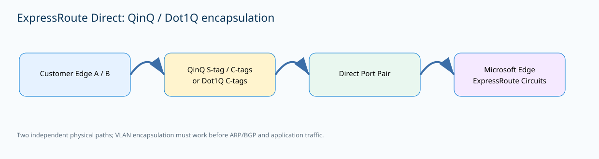
{kind=link}
Prerequisites and implementation
Before ordering cross-connects, confirm the peering location has the requested bandwidth and the subscription is enabled for ExpressRoute Direct. The Direct resource and circuits created on it must follow the documented subscription and location requirements. Confirm optics, cross-connect responsibility, and router capabilities with the provider. Decide QinQ versus Dot1Q before deployment and assign ownership for the VLAN registry. With QinQ, record each circuit’s S-tag plus the C-tags used for private and Microsoft peering. With Dot1Q, reject automation that tries to reuse a C-tag already allocated anywhere on the Direct resource.
az network express-route port location show -l "<peering-location>"
az network express-route port create \
--name <direct-port> --resource-group <rg> \
--bandwidth 100 gbps --encapsulation QinQ \
--peering-location "<peering-location>" --location <azure-region>
az network express-route port show -g <rg> -n <direct-port> -o jsoncAfter Microsoft and the connectivity provider report the physical ports ready, create circuits against the Direct resource and configure peerings with the documented VLAN and peer IP values. Keep an authoritative table mapping circuit name, owner, bandwidth, S-tag when applicable, peering C-tags, CE subinterface, and both physical paths. Do not rely on device descriptions alone. A future engineer should be able to trace an Azure circuit object to the exact customer port and VLAN without reverse engineering production configuration.
Circuit isolation, redundancy, and acceptance testing
A Direct port pair can host multiple circuits, so circuit lifecycle and physical-port lifecycle are separate. Creating a circuit does not mean the cross-connect is lit, and enabling a port does not mean each circuit is correctly tagged. QinQ is useful when an outer service tag per circuit makes isolation explicit; Dot1Q can simplify equipment configuration where stacked tagging is not desired but moves uniqueness enforcement to the customer. Neither encapsulation automatically creates operational diversity.
Acceptance testing should isolate each path. First prove optical state, Ethernet counters, expected tags, ARP, BGP, learned prefixes, and representative application traffic. Then administratively remove path A and prove path B carries the required routes and load; repeat in the opposite direction. This catches hidden common dependencies such as both cross-connects landing on one customer switch, one carrier device, one power feed, or one copied VLAN template. Capacity should also be tested during a single-path condition; redundancy is incomplete if the surviving path technically converges but becomes saturated.
Verification
az network express-route port show -g <rg> -n <direct-port> -o jsonc
az network express-route peering list -g <rg> --circuit-name <circuit> -o tableencapsulation: QinQ
provisioningState: Succeeded
CircuitState: Enabled
Path A BGP: Established
Path B BGP: Established
Rx/Tx counters: increasing on both tested pathsSuccess is layered. The resource must have the intended encapsulation, the circuit must be enabled, both independent BGP paths must be established, and traffic counters must prove forwarding. If only one adjacency is established, the service is not fully redundant even when ARM reports success.
Troubleshooting
az network express-route port show -g <rg> -n <direct-port> -o jsonc
az network express-route peering list -g <rg> --circuit-name <circuit> -o tableprovisioningState: Succeeded
encapsulation: QinQ
Path A: BGP Established
Path B: BGP Idle
CE-B: no ARP for Microsoft peer; unexpected VLAN tagThis isolates the failure below routing policy. Compare S-tag and C-tag configuration, subinterface encapsulation, and the physical path before changing prefixes or BGP attributes. In Dot1Q mode, also check for a C-tag reused elsewhere on the Direct resource.
ExpressRoute scalable gateway (ErGwScale): fixed capacity and autoscaling
Why it matters
ErGwScale changes how an ExpressRoute virtual network gateway is sized. Traditional gateway SKUs require a fixed tier and later SKU work when throughput, route scale, or circuit count grows. The scalable gateway uses scale units from 1 through 40 and supports fixed capacity or autoscaling. If minimum and maximum are equal, capacity is fixed. Autoscaling requires a minimum of at least two units and a maximum greater than the minimum. This is useful for variable aggregate traffic and networks that want a larger growth ceiling without repeatedly redesigning the gateway.
Autoscaling is not automatically better. Microsoft specifically recommends fixed scaling for workloads that include Private Link traffic. Treat the minimum as required always-on capacity and the maximum as an explicit performance and cost ceiling. Capacity planning must consider aggregate throughput, packets per second, flows, route count, number of connected circuits, and what happens when a redundant path fails. A 10-Gbps circuit does not mean one application always needs 10 Gbps of gateway capacity, but several circuits converging on one VNet can create pressure far beyond what any single circuit diagram suggests.
Architecture
The scalable gateway sits between ExpressRoute circuit connections and the VNet routing domain. Microsoft edge routers terminate circuit BGP sessions, while the managed VNet gateway forwards between connected circuits and Azure workloads. ErGwScale represents forwarding capacity in scale units. The control plane includes the gateway SKU, minimum and maximum units, circuit connections, provisioning state, and routing relationships. The data plane is the actual packet path through the managed gateway.
Autoscaling changes serving capacity without changing the customer BGP peering on the ExpressRoute circuit. Fixed scaling pins the unit count. That means a gateway can remain Succeeded and every circuit can remain Connected while packet loss or latency rises because the configured capacity is too small for the traffic mix. The diagnostic boundary is therefore different from a BGP outage: stable routes with congestion evidence point toward capacity, not routing policy.
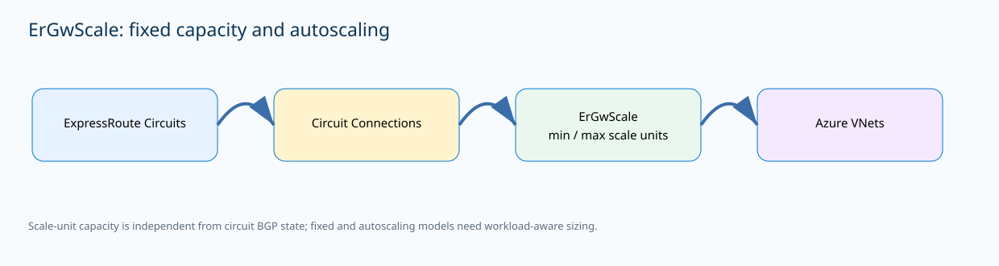
{kind=link}
Prerequisites and implementation
Use a supported ExpressRoute gateway deployment and Standard public IP resources according to the current guide. Existing ErGw1Az, ErGw2Az, and ErGw3Az gateways have a documented upgrade path to ErGwScale, while older Standard, HighPerformance, and UltraPerformance gateways use the migration process. Validate regional availability and current limitations before production changes. Microsoft currently lists IPsec over ExpressRoute as unsupported with ErGwScale, so a design that relies on that overlay should not migrate merely for more throughput.
az network vnet-gateway create \
--name <ergw> --resource-group <rg> --vnet <vnet> \
--public-ip-addresses <gateway-pip> \
--gateway-type ExpressRoute --sku ErGwScale \
--min-scale-unit 4 --max-scale-unit 4
# Convert to autoscaling after capacity analysis:
az network vnet-gateway update -g <rg> -n <ergw> \
--min-scale-unit 2 --max-scale-unit 10Capture current circuit connections, learned routes, gateway metrics, and application baselines before an upgrade. For a new deployment, choose a fixed unit count when predictable capacity is desired or when the workload profile matches Microsoft’s fixed-scaling guidance. If autoscaling is selected, make the minimum large enough to handle normal production plus an expected failure condition rather than depending on a scale event during every peak.
Capacity engineering and migration behavior
Start with measured traffic instead of selecting the largest possible maximum. Multiple circuits can converge on one gateway, and packet-per-second pressure can be more important than raw gigabits. Size the minimum so normal production traffic and the expected single-path or single-circuit failure load fit with headroom. Use the maximum as a deliberate ceiling. If telemetry shows the gateway living near maximum, increase the baseline or redesign capacity rather than treating autoscale as permanent saturation management.
During migration, verify each circuit connection independently and test a representative application from every important on-premises site. Fail one redundant ExpressRoute path and confirm the gateway remains within capacity while routes reconverge. For legacy non-AZ gateway families, use the supported migration path rather than attempting an unsupported direct SKU change. For Private Link-heavy environments, keep capacity deterministic if that is the documented recommendation. A migration is successful only when route state, workload traffic, and failure behavior match the pre-change design—not merely when the gateway resource changes SKU.
Verification
az network vnet-gateway show -g <rg> -n <ergw> \
--query "{sku:sku.name,min:minScaleUnit,max:maxScaleUnit,state:provisioningState}" -o json{"sku":"ErGwScale","min":2,"max":10,"state":"Succeeded"}
ExpressRoute connections: Connected
Learned routes: expected prefixes present
Gateway metrics: below configured capacity ceilingThe SKU and scale range confirm the control-plane design. Connection and route state show that the circuit relationships survived. Metrics and representative traffic prove the gateway has operational headroom.
Troubleshooting
az network vnet-gateway show -g <rg> -n <ergw> -o jsonc
az network express-route list -g <rg> -o tablesku.name: ErGwScale
provisioningState: Succeeded
minScaleUnit: 2
maxScaleUnit: 2
BGP/routes: stable
Observed: sustained packet loss during peak
Private Link traffic: significantThe gateway is technically healthy but fixed at two units. Increase fixed capacity if measurements show saturation, especially when the workload profile favors fixed scaling. Do not edit BGP advertisements when adjacencies and routes are stable and the evidence points to forwarding capacity.
NVA forwarding in Azure: NIC IP forwarding, guest forwarding, and UDR insertion
Why it matters
A network virtual appliance can be a firewall, router, WAN optimizer, or custom Linux appliance, but Azure does not turn an ordinary VM into a transit router merely because it has multiple NICs. Forwarding requires cooperation between the Azure fabric and the guest. The NIC enableIPForwarding property permits the interface to receive traffic not addressed to its own configured IP and to transmit traffic whose source can differ from the NIC IP. The guest operating system or appliance must separately forward packets. Finally, user-defined routes must actually steer traffic to the NVA private IP.
These are independent gates. A correct UDR still fails if NIC forwarding is disabled. Azure forwarding enabled does nothing if Linux net.ipv4.ip_forward is zero or a commercial firewall has transit disabled. A correctly forwarding appliance sees no traffic when the source subnet follows a direct system route. This three-layer model is one of the most useful fault-isolation patterns for NVA insertion because it prevents teams from changing NSGs, UDRs, and firewall policy at the same time.
Architecture
Consider an application subnet, an NVA subnet, and a destination subnet. The application subnet has a route table containing the destination prefix with next-hop type VirtualAppliance and the NVA private IP. Azure sends the packet to the NVA even though the packet’s original IP destination is not the NVA itself. NIC IP forwarding allows the transit behavior. Inside the VM, the kernel or firewall process routes and inspects the packet before transmitting it toward the destination.
The Azure control plane owns route tables, subnet associations, effective routes, and NIC forwarding state. The guest owns kernel forwarding, firewall policy, NAT, session tables, and vendor-specific routing. No platform mechanism automatically makes those layers consistent. A deployment can therefore be completely successful in ARM while the appliance receives a packet and silently drops it before egress. A stateful design normally also requires the return path to traverse the same appliance session or a properly synchronized peer.
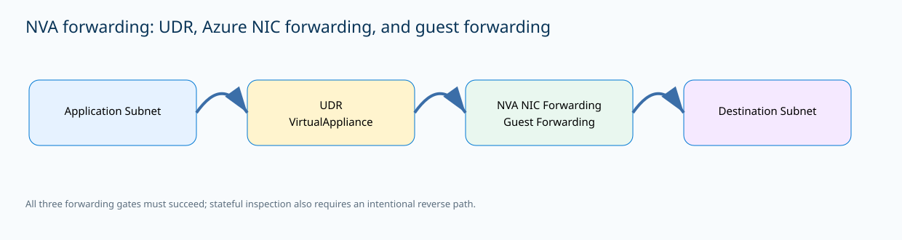
{kind=link}
Prerequisites and implementation
Enable IP forwarding on every NVA NIC participating in transit, then enable forwarding in the guest operating system or through the appliance vendor configuration. Create a route table, add the inspected destination prefix with next-hop type VirtualAppliance, and associate that route table with the source subnet. Replace placeholders with the NVA NIC, VM, destination CIDR, private next-hop IP, and route table names. For a commercial virtual firewall, use the vendor’s supported interface model rather than assuming a generic Linux command is sufficient.
az network nic update -g <rg> -n <nva-nic> --ip-forwarding true
az vm run-command invoke -g <rg> -n <nva-vm> \
--command-id RunShellScript \
--scripts "sudo sysctl -w net.ipv4.ip_forward=1"
az network route-table route create -g <rg> \
--route-table-name <rt> -n to-inspected \
--address-prefix <destination-cidr> \
--next-hop-type VirtualAppliance \
--next-hop-ip-address <nva-private-ip>Decide whether the NVA preserves source addresses or performs SNAT and document that decision because it changes return routing and logging. For multi-NIC appliances, verify forwarding on every transit NIC. If the source and destination are in peered or otherwise directly connected networks, the return direction might take a different system route unless you deliberately steer it back through the inspection service.
Symmetry, NAT, and fault isolation
A route table controls traffic leaving the subnet to which it is associated. Stateful inspection usually requires reverse traffic to return through the same session owner. If the destination subnet follows a system route directly back to the source, a SYN can arrive through the firewall while the SYN-ACK bypasses it. SNAT can force replies back to the appliance, but it changes source identity and is not a substitute for deliberate routing. Use SNAT only when it is part of the intended security and logging design.
Troubleshoot from outside inward. First prove the source NIC effective route resolves the destination to the expected VirtualAppliance address. Then show the NVA NIC’s IP-forwarding flag. Next query guest forwarding or the vendor forwarding state. Finally inspect firewall policy, sessions, and packet captures on ingress and egress. If the packet reaches NVA ingress but not egress, routing to the NVA is already proven. If the packet never reaches the NVA, editing a firewall rule cannot help.
Verification
az network nic show -g <rg> -n <nva-nic> --query enableIpForwarding
az network nic show-effective-route-table -g <rg> -n <source-nic> -o table
az vm run-command invoke -g <rg> -n <nva-vm> --command-id RunShellScript --scripts "sysctl net.ipv4.ip_forward"true
User Active 10.60.0.0/16 VirtualAppliance 10.20.0.4
net.ipv4.ip_forward = 1
NVA session: established on forward and reverse pathThese states prove Azure permits transit, the source actually sends the destination prefix to the appliance, and the guest is forwarding. Session or packet counters then prove the NVA policy is allowing the flow.
Troubleshooting
az network nic show-effective-route-table -g <rg> -n <source-nic> -o table
az vm run-command invoke -g <rg> -n <nva-vm> --command-id RunShellScript --scripts "sysctl net.ipv4.ip_forward"Effective route: 10.60.0.0/16 -> VirtualAppliance 10.20.0.4
NVA NIC enableIpForwarding: true
net.ipv4.ip_forward = 0
NVA ingress: SYN seen
NVA egress: no packetThe Azure route and NIC are correct, but the guest is not forwarding. Correct guest or appliance forwarding and repeat the exact packet test. Do not change the UDR because it already delivered the packet to the NVA.
Azure Public IP Prefix: stable contiguous Microsoft-owned address blocks
Why it matters
A Public IP Prefix reserves a contiguous block of Microsoft-owned public addresses for one Azure subscription and region. It is useful when external partners, SaaS platforms, allowlists, or enterprise firewalls need a predictable range instead of an expanding collection of unrelated public IP addresses. The prefix is an allocation resource, not a forwarding appliance. You create Standard static Public IP resources from the block and attach those addresses to supported services.
If an individual child Public IP is deleted, its address returns to the reserved range while the prefix remains. This differs from Bring Your Own IP: a normal Public IP Prefix is allocated from Microsoft address space, while a Custom IP Prefix represents address space an organization owns and onboards to Azure. The lifecycle benefit is stability. The full Microsoft-owned block remains reserved for the subscription until the prefix itself is deleted, which makes partner allowlists and network governance easier to manage.
Architecture
The prefix has a CIDR size, region, SKU, IP version, and optional zone model. Microsoft documents normal IPv4 prefix sizes such as /28 through /31, with corresponding IPv6 options. A /28 reserves sixteen IPv4 addresses. Regional public-IP quota is consumed by the reserved block even when only some child addresses are instantiated. Data-plane packets still enter or leave through ordinary Public IP resources attached to load balancers, NAT Gateway, NICs, or other supported services. The prefix never becomes a route next hop.
This architecture separates address governance from forwarding configuration. A stable prefix can simplify an external firewall allowlist, but it cannot fix an unhealthy load-balancer backend or a missing NAT Gateway association. Each child Public IP must satisfy the documented region, subscription, SKU, IP-version, and zone constraints. Treat prefix lifecycle as an IPAM process and the service that uses each child address as a separate networking process.
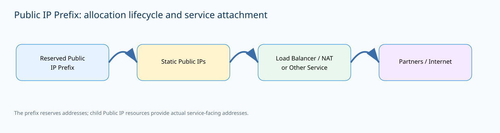
{kind=link}
Prerequisites and implementation
Create the prefix with an intentional size and zone model. The example reserves a Standard IPv4 /28 in a region where the selected zone behavior is supported. Then create a static Standard Public IP from the range and attach that child address through the owning service’s normal configuration. Keep the prefix and child Public IPs as separate infrastructure-as-code resources so one application can release its address without destroying the enterprise reservation.
az network public-ip prefix create \
--length 28 --name <prefix> --resource-group <rg> \
--sku standard --location <region> --version IPv4
az network public-ip create \
--name <pip> --resource-group <rg> \
--allocation-method Static --public-ip-prefix <prefix> \
--sku Standard --version IPv4Azure normally chooses an available address from the prefix; if a specific address is required, follow the documented child-PIP parameter behavior rather than assuming allocation is sequential. Maintain business IPAM metadata for address owner, attached service, environment, partner allowlists, and retirement status. Azure resource tags help, but they are not a complete substitute for ownership and external dependency records.
Quota, zones, and lifecycle controls
Prefix size should reflect a real allocation plan. Reserving many /28 blocks can consume regional public-IP quota even when most addresses are unused. When an application is decommissioned, detach and delete the child Public IP only after verifying no frontend, NAT Gateway, or NIC still references it. The address then becomes reusable inside the reserved prefix. Deleting the prefix is a broader external event because the block is released; a new prefix with the same name must not be assumed to receive the same CIDR.
Match zone behavior to consuming services. A zone-redundant prefix can support resilient designs in regions that support the model; a zonal prefix intentionally ties allocation to a specific zone. Routing preference and newer public-IP SKU behavior have their own constraints, so do not copy flags from one SKU generation to another without checking current documentation. During an outage, if the child Public IP still exists and references the expected prefix, move the investigation to the attached forwarding service before blaming the allocation resource.
Verification
az network public-ip prefix show -g <rg> -n <prefix> -o jsonc
az network public-ip show -g <rg> -n <pip> --query "{ip:ipAddress,prefix:publicIPPrefix.id,sku:sku.name,state:provisioningState}" -o jsonprefixLength: 28
provisioningState: Succeeded
{"ip":"203.0.113.10","prefix":".../publicIPPrefixes/<prefix>","sku":"Standard","state":"Succeeded"}The child Public IP explicitly references the reserved prefix. Confirm the assigned address is within the reserved CIDR and record it in IPAM and any partner allowlist. Reachability of the attached service must still be tested separately.
Troubleshooting
az network public-ip prefix delete -g <rg> -n <prefix>PublicIpPrefixCannotBeDeleted:
Public IP address resources are still allocated from this prefix.This is a protective dependency error. Enumerate child Public IPs, detach or delete them through their owning services, then retry. Do not create a replacement prefix and assume the same public CIDR will return.
Standard Load Balancer health probes: application-aware backend eligibility
Why it matters
Health probes tell Azure Load Balancer whether a backend instance should receive new flows. Probe design is therefore part of application availability, not a cosmetic monitoring setting. Standard Load Balancer supports TCP, HTTP, and HTTPS probes. TCP proves that a listener accepts a connection. HTTP or HTTPS can test a purpose-built application path and use the response as a readiness signal. The probe should represent whether the instance can safely serve traffic, not merely whether the operating system is alive.
Probe state also has nuanced flow behavior. When one backend becomes unhealthy, new flows stop going to it while established TCP connections can continue until the application ends them, an idle timeout occurs, or the VM stops. That means a maintenance test can show old sessions on one server and new sessions on another without proving inconsistent load-balancer behavior. Operators need to know the difference between new-flow eligibility and established-session lifetime.
Architecture
The frontend receives client traffic and a load-balancing rule selects a healthy backend pool member. Each rule references a health probe. Azure sends platform health probes from the documented health-probe source associated with 168.63.129.16 and the AzureLoadBalancer service tag. The backend must permit and answer the probe on the interface and port where it arrives. For HTTP/HTTPS, the health path should be cheap, deterministic, and return success only when the instance can actually serve the corresponding traffic.
A health path that performs an expensive database transaction can become its own outage generator, while a path that always returns 200 keeps failed servers in rotation. Multi-NIC appliances must return the probe through the correct interface. Microsoft also warns against translating a probe through an NVA to a different backend merely to infer downstream health, because a remote dependency failure can falsely mark the appliance unhealthy and drain traffic from an otherwise functional forwarding node.
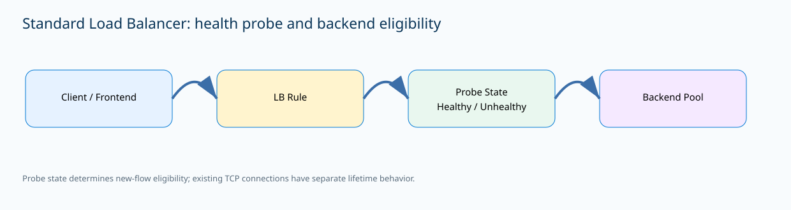
{kind=link}
Prerequisites and implementation
Create the application health endpoint first, then configure the probe with protocol, port, path, interval, and threshold appropriate to the service. The example probes HTTP /health on port 8080 every five seconds with threshold two. Associate the probe with the intended load-balancing rule and ensure the backend NSG allows the Azure Load Balancer probe source. A probe resource has no operational value if no relevant rule uses it.
az network lb probe create \
-g <rg> --lb-name <lb> --name app-health \
--protocol http --port 8080 --path /health \
--interval 5 --threshold 2
az network lb probe show -g <rg> --lb-name <lb> -n app-health -o jsoncFor HTTPS probes, use a server certificate chain compatible with documented probe behavior and do not build the health path around mutual TLS because the platform probe does not present an application client certificate. For an NVA, use a vendor-supported signal that represents appliance forwarding readiness. During planned maintenance, make the health endpoint fail before shutting down the VM, confirm new connections shift to remaining backends, and verify those backends have enough capacity.
Maintenance, thresholds, and readiness design
Probe protocol should match what “ready” means. TCP is sufficient when listener availability is the meaningful requirement. HTTP or HTTPS is better when the application can expose a safe readiness URL. The threshold influences consecutive success and failure handling, but explicit application responses and timeouts have documented behaviors that must be understood rather than guessed. Avoid a health endpoint that depends on a noncritical remote service whose brief failure would drain every backend at once.
During maintenance, remove one backend through health and observe new-session placement. Existing TCP sessions can persist, so do not declare the probe broken because a previously established client still communicates with the drained server. If local /health returns 200 but Azure marks the instance unhealthy, investigate NSG, return path, interface binding, and the exact listener before modifying the load-balancing rule. This is especially important on multi-NIC NVAs where asymmetric probe replies can make an otherwise functioning application appear unavailable.
Verification
az network lb probe show -g <rg> --lb-name <lb> -n app-health -o jsoncprotocol: Http
port: 8080
requestPath: /health
intervalInSeconds: 5
numberOfProbes: 2
provisioningState: Succeeded
Backend-01: Healthy
Backend-02: HealthyThen deliberately return failure from one test backend and confirm new connections stop arriving there while the surviving backend continues. That controlled failure validates the probe’s real effect rather than merely its configuration.
Troubleshooting
curl -i http://127.0.0.1:8080/health
az network lb probe show -g <rg> --lb-name <lb> -n app-health -o jsoncHTTP/1.1 503 Service Unavailable
Probe provisioningState: Succeeded
Backend-01: Unhealthy
Backend-02: Healthy
New connections: Backend-02 onlyThe probe object is healthy; the application readiness signal is not. Investigate why the health endpoint returns 503 rather than recreating the Load Balancer. If local curl returns 200 but Azure still reports Unhealthy, focus on probe reachability, NSG, interface binding, and return path.
Application Gateway connection draining: graceful backend removal during deployments
Why it matters
Connection draining gives Application Gateway a controlled way to stop sending new requests to a backend instance that is being removed while allowing established connections to finish for a configured period. It matters during rolling deployments, scale-in events, planned maintenance, and application upgrades. Without draining, removing a backend can interrupt long downloads, uploads, API requests, or WebSocket sessions and create intermittent gateway errors that appear only during deployment windows.
Draining is configured on the backend HTTP setting rather than the listener, so different applications can use different timeout requirements. Microsoft documents a user-defined timeout up to 3,600 seconds, with zero disabling draining. The correct value should exceed the longest legitimate transaction that must survive backend removal, but it should not be inflated without reason. Connection draining is a transition control; it does not migrate a live TCP session to another server.
Architecture
Client traffic enters a listener, matches a routing rule, selects a backend pool, and uses a backend setting that defines protocol, port, timeout, cookie affinity, and draining behavior. When a backend is deregistered, Application Gateway stops selecting it for new work while preserving eligible existing connections until completion or the drain timeout. Health probes are a different state machine. A backend can be healthy but deliberately draining because deployment automation is removing it.
This distinction is important during operations. An unhealthy server is excluded because it cannot safely serve traffic; a draining server can still be healthy and complete existing work. Sticky sessions and long-lived connections need explicit testing because affinity can keep clients associated with the backend and WebSocket sessions cannot be transferred to a replacement server. The timeout must reflect real application transaction duration rather than an arbitrary round number.
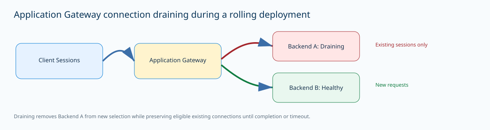
{kind=link}
Prerequisites and implementation
Update the backend HTTP setting used by the application and set an intentional draining timeout. Five minutes is appropriate only when it exceeds the measured transaction duration for that service. Integrate the setting into deployment automation: add the replacement backend, wait until its probe reports Healthy, remove the old backend from active membership, observe active sessions trend down, and only then stop or patch the old instance.
az network application-gateway http-settings update \
-g <rg> --gateway-name <appgw> \
-n <backend-setting> \
--connection-draining-timeout 300
az network application-gateway show-backend-health \
-g <rg> -n <appgw> -o jsoncFor large-file services, measure real transfer duration. A timeout shorter than legitimate transactions causes resets that line up with deployment activity. Keep probes and draining separate in the runbook: health determines whether a server is eligible to take new work; draining controls graceful removal of a server that can still be healthy.
Rolling deployment and session behavior
A safe blue/green rollout creates a reversible intermediate state. Backend B enters the pool and becomes healthy. New traffic can use B. Backend A is removed and begins draining, so new sessions should no longer start there while established sessions finish. If B becomes unhealthy during that interval, deployment automation can restore A instead of rebuilding it. Observe gateway access logs and backend connection counts. The expected pattern is declining active sessions on A and new-session growth on B.
Cookie affinity should be tested because gateway-managed affinity can affect client placement during the transition. WebSocket clients need retry logic because a drained socket cannot move. If clients reset at exactly the configured drain timeout, that is strong evidence of drain-duration mismatch rather than DNS, WAF, or certificate problems. Choose the timeout from measured transaction behavior and document why the value is safe. Also test the failure path: if a replacement backend never becomes healthy, automation should abort removal of the old server rather than entering drain anyway.
Verification
az network application-gateway http-settings show \
-g <rg> --gateway-name <appgw> -n <backend-setting> -o jsonc
az network application-gateway show-backend-health -g <rg> -n <appgw> -o jsoncconnectionDraining.enabled: true
drainTimeoutInSec: 300
Backend-B: Healthy
New requests -> Backend-B
Existing request on Backend-A -> completes before 300sStart a controlled long-running request on A, remove A, and confirm it completes while new requests land on B. This proves actual draining behavior rather than just a property in the backend setting.
Troubleshooting
az network application-gateway http-settings show -g <rg> --gateway-name <appgw> -n <backend-setting> -o jsoncconnectionDraining.enabled: true
drainTimeoutInSec: 30
Backend-B: Healthy
Expected download duration: 180s
Observed: reset at ~30s during rolloutThe timeout is shorter than a legitimate transaction. Increase the drain timeout above the measured maximum and repeat the rollout. Do not change DNS, certificates, or WAF policy when the reset consistently aligns with the draining timer.
Network Watcher VPN troubleshoot: diagnostic runs for gateways and connections
Why it matters
VPN incidents often start with an imprecise symptom: a tunnel is down, intermittent, or carrying only one direction. Network Watcher VPN troubleshoot provides a platform diagnostic workflow for Azure VPN virtual network gateways and their connections. It differs from packet capture. You start a troubleshooting request against a gateway or specific VPN connection, provide Azure Storage for diagnostic output, and Azure returns a health result plus action guidance when it detects a problem. Detailed logs are written to the specified storage path.
The tool is valuable because it examines Azure platform state that cannot be inferred from one client ping. It does not replace on-premises firewall evidence, route analysis, or application testing. Instead, it narrows the fault domain. A Healthy result means the diagnostic checks for the selected gateway or connection did not find a VPN service problem; it does not prove every application prefix is routed or allowed.
Architecture
Network Watcher must be available in the virtual network gateway region. The target can be the gateway resource or an individual VPN connection. The diagnostic service reads platform state, executes its checks, and writes artifacts to Azure Storage. A gateway-level run is appropriate when several connections fail or the shared gateway appears unhealthy. A connection-level run is more precise when one branch fails while other tunnels on the same gateway work.
The result is control-plane and platform evidence. It does not generate representative application traffic for every prefix. Store the diagnostic output with the incident timeline so Azure and peer logs can be correlated at matching timestamps. A failure writing the diagnostic blob is a troubleshooting-workflow problem, not evidence that the VPN data plane itself is down.
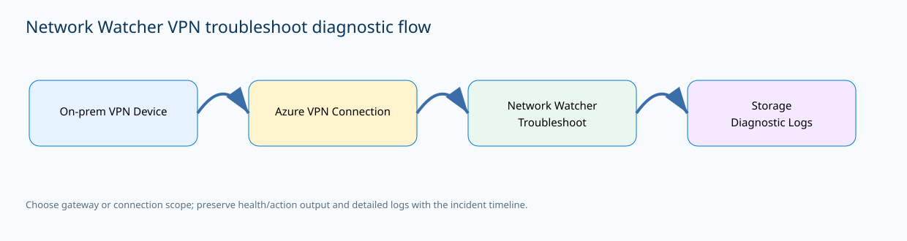
{kind=link}
Prerequisites and implementation
Select or create a Storage account and container for diagnostic output. Retrieve the Storage resource ID and start the troubleshooting run. The documented CLI supports gateway and VPN-connection targets. Use a gateway target when symptoms affect the shared service and a connection target when one site is isolated. Preserve the final health status, action text, and log path. After remediation, rerun the exact same target and retain the before-and-after result.
storageId=$(az storage account show \
--name <storage-account> --resource-group <rg> \
--query id -o tsv)
az network watcher troubleshooting start \
--resource-group <rg> \
--resource <connection-name> \
--resource-type vpnConnection \
--storage-account "$storageId" \
--storage-path "https://<storage-account>.blob.core.windows.net/<container>"If the gateway has several connections, do not use a healthy unrelated site as proof that the affected connection is healthy. Conversely, if multiple independent sites fail simultaneously, gateway-level evidence is more useful than running many unrelated application tests. The goal is to choose a diagnostic boundary that matches the suspected failure boundary.
Choosing the diagnostic boundary
Use the gateway when multiple VPN connections fail together, gateway provisioning is abnormal, or maintenance affected shared gateway instances. Use a connection when one branch or partner fails while other tunnels remain stable. Pair the Network Watcher result with the peer’s IKE/IPsec logs. If both show negotiation failure at the same time, investigate crypto, authentication, peer reachability, or selector behavior. If Azure reports Healthy and peer IPsec counters increase but an application still fails, move above the tunnel into routing, NAT, firewall policy, or the workload.
That handoff is important. VPN troubleshoot is not meant to replace every network diagnostic. It can say the connection is healthy while a UDR sends the decrypted packet to the wrong next hop. It can say the gateway is healthy while an on-premises firewall drops a particular Phase-2 prefix. By recording the exact target and timestamp, operations can stop repeating tunnel restarts and instead use evidence to move to the next layer.
Verification
az network watcher troubleshooting start --resource-group <rg> \
--resource <connection-name> --resource-type vpnConnection \
--storage-account "$storageId" --storage-path "https://<storage>.blob.core.windows.net/<container>"status: Healthy
action: No action required
detailed logs: written to Storage
Azure connection: Connected
Peer IKE/IPsec SA: establishedA Healthy diagnostic plus connected peer state clears the Azure VPN connection as the immediate fault. If users still fail, move to route and security evidence for the exact application prefixes.
Troubleshooting
# Run the same connection-level diagnostic and correlate its timestamp with peer logs.status: UnHealthy
action: Review VPN connection configuration and logs
Azure connection: NotConnected
Peer log: IKE negotiation failureUse the detailed Network Watcher output and peer log to identify the specific negotiation or reachability cause. Correct one cause and rerun the same diagnostic. Avoid simultaneously changing routes, NSGs, and cryptographic proposals because uncontrolled changes destroy the value of before-and-after evidence.
Azure Firewall threat intelligence: pre-rule malicious IP and domain filtering
Why it matters
Azure Firewall threat intelligence uses Microsoft threat-intelligence feeds to identify high-confidence malicious IP addresses and domains and can alert or block traffic. The critical architectural fact is precedence: threat intelligence is evaluated before ordinary NAT, network, and application rule processing. A connection can therefore be denied by reputation even when an application rule would otherwise allow it. Understanding that order prevents teams from debugging a later rule collection that never gets a chance to evaluate the packet.
The feature can be off, alert-only, or alert-and-deny. Alert-only is useful during introduction because it reveals what enforcement would affect without immediately changing connectivity. Alert-and-deny converts the feed into a blocking control. An allowlist supports a verified exception, but it must be tightly governed. A threat-intelligence allowlist is not a normal application allow rule and should not become a convenient mechanism for bypassing investigation of a potentially compromised endpoint.
Architecture
Routing first sends the packet to Azure Firewall. Before NAT, network, and application rule collections evaluate it, threat intelligence compares the source or destination with Microsoft’s feed. In deny mode a high-confidence match is blocked and logged without proceeding to an ordinary allow rule. Firewall Policy hierarchy adds governance: threat-intelligence settings can be inherited, and organizational policy can require an enforcement posture.
Allowlist entries can have broad effect when inherited, so the architecture includes an exception-governance path separate from ordinary rules. During troubleshooting, the log category and action are decisive. When the threat-intelligence log reports a deny, modifying a later application rule cannot override the decision. Investigate the indicator, source host, destination reputation, and exception process instead.
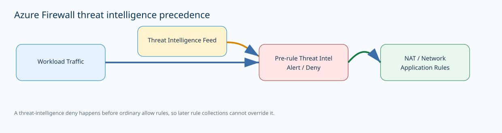
{kind=link}
Prerequisites and implementation
Set the mode explicitly after an alert-only observation period. For a directly managed firewall, Azure CLI exposes the threat-intelligence mode. In enterprise Firewall Policy environments, combine technical settings with Azure Policy so project teams cannot silently weaken the organization’s required posture. If a verified false positive needs an exception, use the narrowest FQDN or IP scope and record owner, justification, and expiration.
az network firewall update -g <rg> -n <firewall> \
--threat-intel-mode Deny
az network firewall show -g <rg> -n <firewall> \
--query "{mode:threatIntelMode,state:provisioningState}" -o jsonMicrosoft provides a controlled malicious-test FQDN, testmaliciousdomain.eastus.cloudapp.azure.com, for validating threat-intelligence behavior. Route a test client through the firewall, observe the event in alert mode, then use a controlled deny-mode test window. Keep normal application and network rules in place. An allowlist only bypasses the reputation filter; it does not automatically grant access when the ordinary firewall policy still denies the flow.
Testing, logs, and exception governance
A successful rollout is observable. Send a controlled request from a test subnet to the Microsoft malicious-test FQDN and inspect firewall logs for source, destination, action, and threat-intelligence context. In alert mode the event should be visible without reputation enforcement; in deny mode the request should be blocked. Preserve the test timestamp and compare it with client behavior to prove the blocked request matches the logged decision.
If a legitimate production destination is flagged, investigate the source host and destination reputation before adding an exception. Prefer a narrow FQDN or IP scope. Do not allowlist an entire CDN or cloud provider range to remove one alert. After adding an approved exception, prove only the intended indicator bypasses threat-intelligence filtering and that normal firewall rules continue to control access. Review parent-policy inheritance before troubleshooting a child policy because a stricter parent can explain behavior that is not obvious from local rule collections.
Verification
az network firewall show -g <rg> -n <firewall> --query "{mode:threatIntelMode,state:provisioningState}" -o json{"mode":"Deny","state":"Succeeded"}
ThreatIntel log:
destination: testmaliciousdomain.eastus.cloudapp.azure.com
Action: Deny
Indicator: high-confidence threatThe setting and controlled data-path test agree. Confirm unrelated permitted traffic remains unaffected so the validation proves both enforcement and scope.
Troubleshooting
az network firewall show -g <rg> -n <firewall> --query threatIntelMode -o tsv
# Query firewall logs for the destination and incident timestamp.Deny
ThreatIntel log:
source: 10.20.1.15
destination: business-partner.example
Action: Deny
Application rule would otherwise allow the FQDNThe application rule is not the failing layer because threat intelligence evaluates first. Investigate whether the destination is truly malicious and whether the source is compromised. If a verified false positive requires access, create a narrow, governed exception rather than disabling threat intelligence globally.
Scenario / implementation: Azure Firewall governance with Azure Policy
Azure Front Door WAF rate limiting: fixed-window protection at the edge
Why it matters
Azure Front Door WAF rate limiting is a custom-rule control that limits how many matching requests a client socket IP can send during a fixed one- or five-minute interval. It is useful for login paths, promotion URLs, expensive APIs, and endpoints where syntactically valid traffic can still exhaust origin or application capacity. It is not a replacement for authentication, per-user application quotas, or DDoS protection. It is an edge safeguard that can stop excessive matching requests before they consume origin capacity.
The counting model matters. Limits are evaluated by client socket IP across Front Door infrastructure. A client can occasionally reach different Front Door servers, so extremely low thresholds can allow a small amount of traffic beyond the nominal number before distributed counters reflect the traffic. Microsoft notes that larger windows and thresholds tend to produce more accurate enforcement. Once the threshold is breached, subsequent matching requests are blocked for the rest of the fixed window; this is not a continuously sliding token bucket.
Architecture
The client reaches the Front Door edge and the WAF custom rule evaluates match conditions such as Request URI or headers. A RateLimitRule counts matching requests for the client socket IP within the configured interval. Requests below the threshold continue through later WAF and routing processing. Requests after the threshold are blocked at the edge until the window resets, so the origin never sees them.
Every rate-limit rule needs at least one match condition. A narrow rule can protect /promo or /api/login without throttling static content. A broad condition can intentionally cover most requests. Because clients behind enterprise NAT, carrier-grade NAT, or shared proxies can appear from one public socket IP, threshold engineering must account for legitimate aggregation. Rate limiting does not change backend health or establish a separate origin path; allowed requests still follow normal Front Door routing.
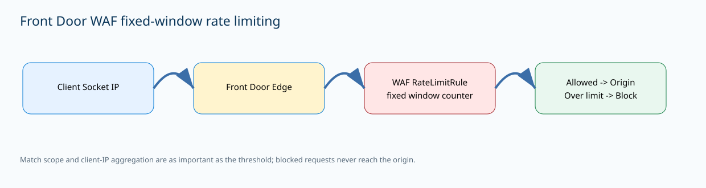
{kind=link}
Prerequisites and implementation
Create or select a Front Door WAF policy, add a custom RateLimitRule, and add at least one match condition. The example protects URIs containing /promo with a threshold of 1,000 requests in one minute. The rule is created with deferred match-condition completion, then the condition is added. Associate the WAF policy with the intended Front Door domain/security policy using the current Standard/Premium model.
az network front-door waf-policy create \
--name <waf-policy> --resource-group <rg> \
--sku Standard_AzureFrontDoor
az network front-door waf-policy rule create \
--name rateLimitPromo --policy-name <waf-policy> \
--resource-group <rg> --rule-type RateLimitRule \
--rate-limit-duration 1 --rate-limit-threshold 1000 \
--action Block --priority 1 --defer
az network front-door waf-policy rule match-condition add \
--match-variable RequestUri --operator Contains --values "/promo" \
--name rateLimitPromo --policy-name <waf-policy> --resource-group <rg>Choose the threshold from observed legitimate per-client behavior and a documented safety margin. Explicitly consider corporate NAT and mobile carrier aggregation. Test below the threshold, above the threshold, and after the window reset. Compare WAF logs with origin request metrics to prove blocked requests did not consume origin capacity.
Window design, NAT aggregation, and observability
A one-minute window reacts quickly but can be more sensitive to bursty clients and distributed edge counters. A five-minute window can provide steadier protection for sustained abuse. Very low thresholds are usually a poor design because the enforcement system is distributed and because legitimate users can share source addresses. Treat the threshold as a security control, not as a billing-grade request meter.
Operationally, correlate WAF action, client socket IP, rule name, RequestUri, status, and origin request volume. If origin load continues to rise while the policy appears enabled, first confirm the requests actually match the rule and that the policy is associated with the active Front Door domain. A rule that protects /promo will not protect /api/login merely because both are expensive endpoints. Scope and threshold are independent design variables.
Verification
az network front-door waf-policy rule show -g <rg> --policy-name <waf-policy> -n rateLimitPromo -o jsoncruleType: RateLimitRule
rateLimitDurationInMinutes: 1
rateLimitThreshold: 1000
action: Block
match: RequestUri Contains /promo
After threshold: matching requests blocked
Next fixed window: requests allowed againRun a controlled source below and above the threshold. Confirm WAF logs show the rate-limit rule and origin metrics do not count the blocked requests. Test an unrelated path to prove the condition is appropriately narrow.
Troubleshooting
az network front-door waf-policy rule show -g <rg> --policy-name <waf-policy> -n rateLimitPromo -o jsoncrule: Enabled
condition: RequestUri Contains /promo
Test traffic: /api/login
WAF log: rateLimitPromo not matched
Origin request count continues risingThe rule is healthy but the test traffic is outside its scope. Change the match condition only if /api/login is also meant to be protected. Lowering the threshold or recreating the WAF policy will not make a /promo condition match a different URI.
Azure Virtual Network Manager Network Verifier: static reachability analysis as code
Why it matters
Network Verifier in Azure Virtual Network Manager answers a different question from packet capture or a live connection test: given the Azure network configuration and supported policies, should a precisely defined source be able to reach a precisely defined destination? It performs static reachability analysis across the Network Manager scope and produces a modeled path plus a blocking reason when traffic is not reachable. This is useful before deployment for validating intended segmentation and after deployment for locating a policy or route that contradicts the design.
Current Microsoft documentation lists support for a broad set of Azure network constructs such as NSGs, application security groups, Virtual Network Manager security admin rules, connected groups, VNet peering, route tables, service endpoints, private endpoints, Virtual WAN, and supported Azure Firewall behavior. It is not packet capture and does not prove that an application process is listening. Unsupported services or dynamic third-party appliance decisions can make runtime behavior differ from the static model.
Architecture
A verifier workspace is a child of an Azure Virtual Network Manager and contains reachability-analysis intents and run results. An intent defines source resource, destination resource, IPs, ports, and protocol. An analysis run evaluates that intent against supported resources and policy inside the parent manager scope. Results show whether packets are expected to reach and identify the path or blocking step.
The workspace also creates an operational delegation boundary. A central network team can grant access to one verifier workspace without transferring ownership of the entire Network Manager. That enables repeatable controls such as “web subnet must reach API TCP/443” and “internet must not reach management TCP/22.” Positive and negative intents can be rerun after policy changes, turning reachability into auditable design evidence rather than a one-time screenshot.
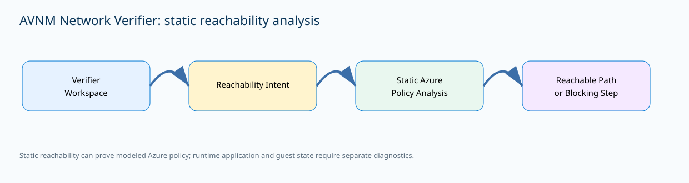
{kind=link}
Prerequisites and implementation
Use the current virtual-network-manager Azure CLI extension. Create a verifier workspace under an existing Network Manager in a supported region. Then create a reachability-analysis intent with exact source and destination resource IDs and an IP-traffic definition. Start an analysis run by passing the intent resource ID. Keep intents narrow enough that their results have business meaning. One exact web-to-API TCP/443 intent is more useful than a wildcard covering every protocol.
az network manager verifier-workspace create \
--name <workspace> --network-manager-name <network-manager> \
--resource-group <rg> --location <supported-region>
az network manager verifier-workspace reachability-analysis-intent create \
--name web-to-api-443 --workspace-name <workspace> \
--network-manager-name <network-manager> --resource-group <rg> \
--source-resource-id <source-vm-id> \
--destination-resource-id <dest-vm-id> \
--ip-traffic "{source-ips:['10.10.1.4'],destination-ips:['10.20.1.4'],source-ports:['1024-65535'],destination-ports:['443'],protocols:['TCP']}"Integrate runs into change validation by saving their JSON output and rerunning the same intents after NSG, UDR, peering, private-endpoint, Virtual WAN, or security-admin changes. If the model says Reachable but users still fail, transition to runtime diagnostics rather than forcing a static analyzer to answer application-layer questions it cannot observe.
Positive and negative intents
Create paired intents. Positive intents describe flows that must work, such as an application subnet to a database private endpoint on the required port. Negative intents describe isolation that must remain blocked. After a routing or security change, run both sets so a repair for one outage cannot silently broaden access somewhere else. A result such as NoPacketsReached can therefore be a success when the intent is a negative security assertion.
The modeled path can identify an NSG, security admin rule, route, peering, or other supported control that blocks the packet. It cannot prove guest firewall, process listener, certificate validation, or a dynamic third-party appliance decision. When static policy says the path is reachable but the service is down, use runtime Connection Troubleshoot, packet capture, workload logs, or appliance telemetry. When static analysis identifies one deny step, fix that resource and rerun the identical intent before changing unrelated network layers.
Verification
az network manager verifier-workspace reachability-analysis-run show \
--name validation-001 --workspace-name <workspace> \
--network-manager-name <network-manager> --resource-group <rg> -o jsoncprovisioningState: Succeeded
result.outcome: Reachable / AllPacketsReached
path: source -> route/peering -> destination subnet
blockingStep: noneThe analysis completed and supported Azure policy permits the modeled TCP/443 path. Preserve the JSON as design evidence and follow with a runtime test when the requirement is actual service availability.
Troubleshooting
az network manager verifier-workspace reachability-analysis-run show \
--name validation-001 --workspace-name <workspace> \
--network-manager-name <network-manager> --resource-group <rg> -o jsoncprovisioningState: Succeeded
result.outcome: NoPacketsReached
blockingStep:
resource: <nsg-or-security-admin-rule>
action: Deny
destinationPort: 443The analysis service succeeded; the modeled packet did not. For a required positive flow, fix the exact blocking rule and rerun the same intent. If this is a deliberate negative intent, preserve the result as evidence that segmentation is functioning.
Scenario / implementation: Verify reachability with Network Verifier
Azure Load Balancer administrative state: controlled backend maintenance overrides
Why it matters
Administrative state gives Azure Load Balancer operators an explicit per-backend override of normal health-probe behavior. The values are Up, Down, and None. None means ordinary probe behavior decides eligibility. Down prevents new connections even when the health probe reports the instance healthy, which is useful for maintenance and controlled tests. Up forces eligibility even when the probe reports unhealthy, which can be useful in narrow scenarios but is dangerous if used to mask an actual application failure.
Admin state is not merely another probe status. It is an operator override. A backend can have a healthy application endpoint yet receive no new flows because the state is Down, or it can receive traffic despite a failed probe because it is forced Up. That distinction should appear in monitoring dashboards and maintenance runbooks so teams do not troubleshoot a deliberate drain as an unexplained health-probe failure.
Architecture
The load-balancing rule still references its health probe, but admin state changes how the backend’s eligibility is interpreted. With None, probe state is authoritative. With Down, the load balancer stops new connections to the backend; established TCP connections have documented persistence behavior. With Up, the load balancer ignores a failed probe for eligibility and keeps the backend available for new flows.
The override is associated with a backend pool instance, not globally with the VM. A VM participating in multiple backend pools can therefore have different administrative state in each pool. A backend pool used by multiple rules carries the override into those associated rules. Admin state only has effect in supported configurations with a health probe and has documented limitations with certain backend models and NAT-rule scenarios.
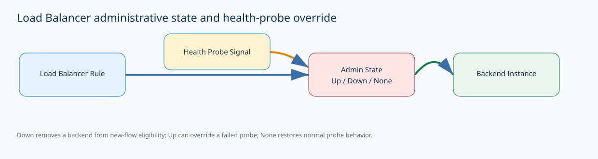
{kind=link}
Prerequisites and implementation
Use admin state as a planned operational action with a ticket and rollback step, not as a permanent workaround. Before patching a backend, set that pool member Down, observe that new flows stop, and allow existing sessions to drain according to application requirements. Patch or restart the server, verify the application locally, then return the state to None so normal probe behavior resumes.
# Inspect the backend pool and current admin-state capable entries.
az network lb address-pool show \
-g <rg> --lb-name <lb> -n <backend-pool> -o jsonc
# Apply Up/Down/None using the current documented backend-address
# command for the pool model in use, then re-read the pool.Reserve Up for deliberate, time-bounded cases and document why it is safe to ignore a failing probe. Leaving a broken server forced Up defeats the protection the probe was designed to provide. Record backend instance, previous state, new state, operator, change ticket, start time, and intended restoration. Load Balancer Insights and health metrics should be used as an independent view of the override.
Maintenance workflow and safety controls
A good maintenance sequence separates traffic drain from server shutdown. Set one backend Down and prove new sessions move to healthy peers. Watch connection counts until the application reaches an acceptable drain point, then patch the server. Verify local readiness before returning the backend to None. This creates a reversible step: if the surviving pool is overloaded, restore the backend instead of continuing maintenance.
Do not set Up merely to make a dashboard green. If the probe is failing for a real reason, forced Up can send users to a broken instance. Admin state is also useful for resilience testing because it creates an intentional backend exclusion without modifying NSGs or probe endpoint code. Test one member at a time and confirm the remaining pool has sufficient capacity. For UDP-heavy applications, study documented flow behavior when a backend goes Down; for long TCP sessions, combine admin-state maintenance with application-level draining if session completion matters.
Verification
az network lb address-pool show -g <rg> --lb-name <lb> -n <backend-pool> -o jsoncbackendAddress: 10.20.1.4
adminState: Down
probeSignal: Healthy
newConnectionsToBackend: 0
existingTcpConnections: draining/persisting
otherBackend: Healthy and receiving new flowsThe useful success condition is intentional disagreement: the probe can remain healthy while admin state Down removes the backend from new-flow eligibility. Before restoring service, return the state to None and verify the probe becomes authoritative again.
Troubleshooting
az network lb address-pool show -g <rg> --lb-name <lb> -n <backend-pool> -o jsoncbackendAddress: 10.20.1.4
adminState: Up
probeSignal: Unhealthy
new connections continue reaching backend
application /health: 503A forced Up state is overriding a real application health failure. Return the state to None or deliberately set it Down, then repair the application. Do not weaken the probe to hide the symptom.
Application Gateway custom error pages: controlled gateway-generated failure responses
Why it matters
Application Gateway can return custom HTML for gateway-generated errors instead of its default pages. This matters for planned maintenance, user guidance, security branding, and incident communication. Supported gateway response codes include common 4xx and 5xx errors such as 400, 403, 405, 408, 500, 502, 503, and 504; 404 is not currently supported. The page is used only when Application Gateway itself generates the relevant error.
If a backend application returns its own 502 or 503, the gateway passes that backend response instead of replacing it with a gateway custom page. This boundary is crucial during testing. A team can correctly configure a custom 502 page and still see an unbranded backend 502 because the error originated behind the gateway. Custom pages can be configured globally or at listener scope, allowing multi-site gateways to present different support information to different applications.
Architecture
Application Gateway downloads the configured HTML page from a publicly accessible URL and caches it locally. The source must satisfy the documented requirements: it must be a supported HTML/HTM file, within the size limit, reachable by the gateway, and return HTTP 200 when fetched. When the gateway generates the configured error, it returns the cached HTML and corresponding status to the client.
External CSS, images, or scripts referenced by the HTML are fetched by the client, so they need absolute reachable URLs and create additional dependencies. The gateway does not continuously poll the source for changes. A configuration update is needed to refresh cached content. That makes the error page a deployment artifact whose version should be controlled, not a live page that an operator edits without refreshing the gateway.
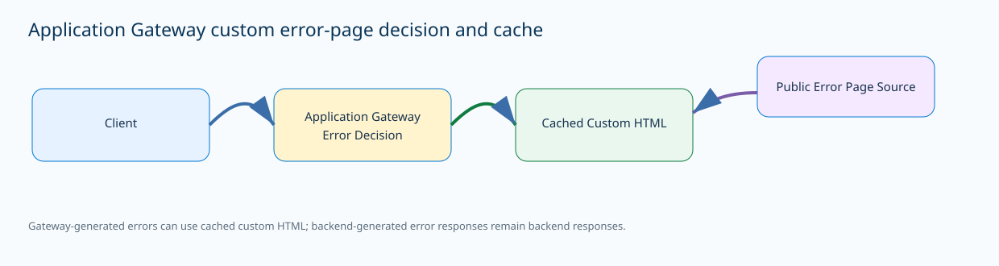
{kind=link}
Prerequisites and implementation
Host a small static error page at a stable HTTPS URL and verify it returns HTTP 200 directly. Keep it self-contained when practical so a gateway failure does not also depend on multiple third-party assets. Configure a global custom error or listener-scoped error according to the audience. Microsoft documents Azure PowerShell for this configuration. For a global 502 page, retrieve the Application Gateway, add the custom error object, and apply the updated gateway.
$appgw = Get-AzApplicationGateway -Name <appgw> -ResourceGroupName <rg>
$updated = Add-AzApplicationGatewayCustomError \
-ApplicationGateway $appgw \
-StatusCode HttpStatus502 \
-CustomErrorPageUrl "https://<public-host>/errors/502.html"
Set-AzApplicationGateway -ApplicationGateway $appgwFor listener scope, retrieve the listener and use the listener-specific custom-error command before committing the gateway. Store source URL, expected code, version, and content owner in source control. After changing the source HTML, perform the documented gateway configuration refresh; do not assume the gateway periodically reloads it.
Caching, scope precedence, and incident use
Global pages apply broadly, but listener-specific custom-error settings take precedence for that listener. On a gateway hosting multiple applications, listener scope is appropriate when different business units need different branding, support contacts, or maintenance wording. Keep required status-code mappings explicit so a listener override does not unintentionally remove a global behavior the team expected.
For incident response, keep pages lightweight and avoid exposing internal hostnames, backend addresses, rule names, or security details. A 403 page can provide a support correlation instruction without exposing WAF rule internals. A 502 or 503 maintenance page can direct users to a status site while backends are unavailable. Cache behavior is an operational trap: editing the source file does not guarantee the gateway immediately serves the new content. Use a controlled configuration update and retest the specific gateway-generated error.
Verification
curl -I https://<public-host>/errors/502.html
# Trigger a controlled gateway-generated 502 and inspect the client response.Source page GET: HTTP 200
Application Gateway update: ProvisioningState Succeeded
Controlled gateway-generated failure:
HTTP/1.1 502 Bad Gateway
Body: company-branded maintenance page
Backend-originated 502 test: backend response passes through unchangedSuccess requires the source page to be retrievable, the gateway update to succeed, and a gateway-generated error to return the expected cached HTML. The backend-generated negative test proves the team understands which failures are eligible for substitution.
Troubleshooting
curl -I https://<public-host>/errors/502.html
# Compare the cached client body with the current source version.Source page: HTTP 403 Forbidden
Gateway references the URL
Client during gateway-generated backend failure: default Application Gateway 502 page
-- or --
Source: HTTP 200 but client receives previous cached version after file editIf the source is not publicly retrievable with HTTP 200, fix hosting/access before changing backend pools. If an old version remains cached after a source-file change, perform the documented gateway configuration refresh and retest. Do not troubleshoot application DNS when the failed dependency is the separate URL used for the custom error artifact.
Scenario / implementation: Application Gateway components
50-question interactive quiz
Distribution: 15 Hybrid connectivity and architecture · 13 Core networking infrastructure · 10 Routing and traffic management · 12 Security, monitoring, and private service access.